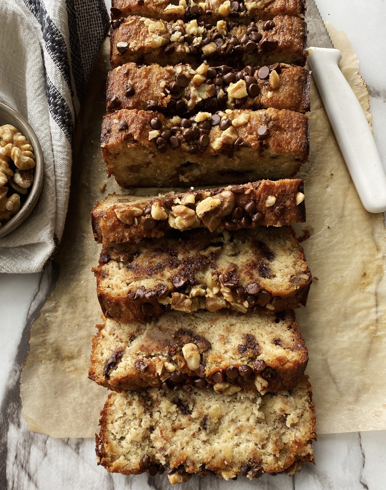
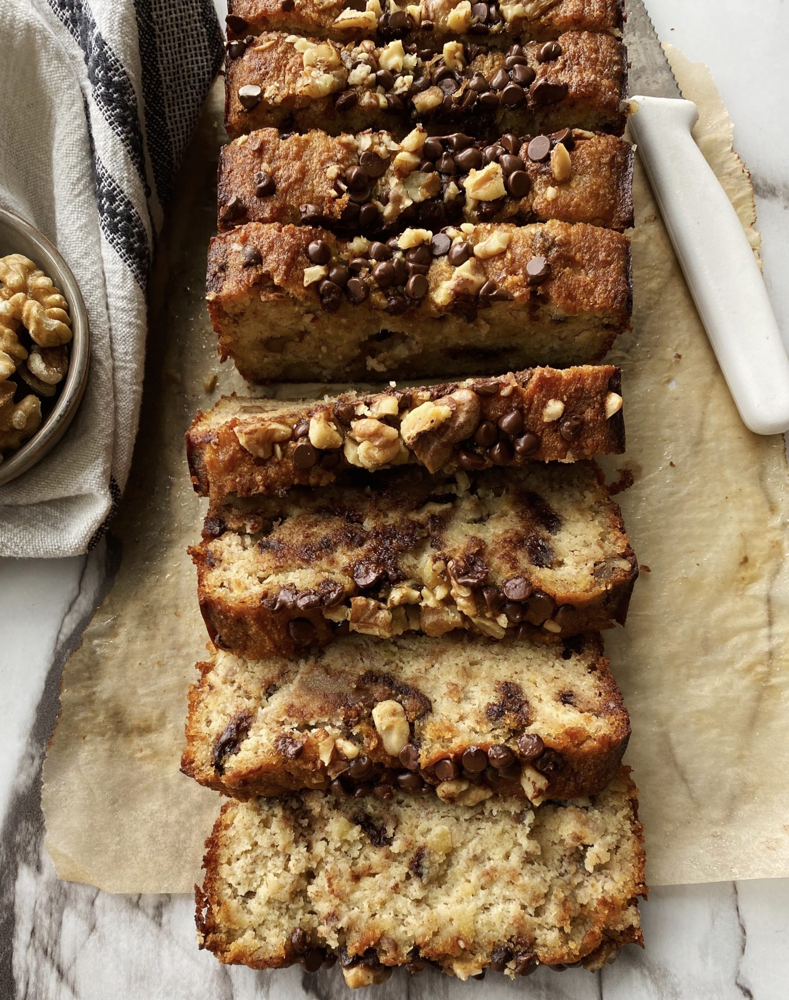

Recipes
Homemade Mac & Cheese
Origin: Northern Europe
Source: Delish.com
Category: Main dish

Macaroni and cheese, commonly known as mac & cheese, is a comfort food staple that has captured the hearts of people all over the world. Originating from Europe and popularized in the United States, this dish consists of elbow macaroni pasta smothered in a creamy cheese sauce. The simplicity of its ingredients - pasta, cheese, and often a touch of butter or milk - belies a rich, complex flavor that has made it a favorite for both quick weeknight dinners and festive holidy gatherings.
Recipe Ingredients
- Macaroni
- Butter and flour
- Milk
- Cheese
- Seasonings
- Bread crumbs
Recipe Steps
- Preheat oven to 375°F. Grease a 13" x 9" baking dish with butter. In a large pot of boiling salted water, cook macaroni, stirring occasionally, until al dente, 5 to 6 minutes. Drain.
- In a large saucepan over medium heat, melt 1 stick of butter. Sprinkle flour over and cook, stirring until slightly golden, 2 to 3 minutes. Pour in milk and whisk until combined. Add mustard powder; season with salt and pepper. Bring to a simmer over medium-high heat and cook, stirring until sauce starts to thicken, about 2 minutes.
- Remove pan from heat and whisk in cheddar, Gruyère, and 1 cup of Parmesan until melted and smooth. Stir in macaroni and transfer to the prepared dish.
- In a small bowl, combine panko, oil, and remaining 1/2 cup Parmesan. Sprinkle over macaroni; season with more pepper.
- Bake mac and cheese until bubbly and golden, 25 to 30 minutes. Let cool for 10 minutes.
Additional Food Images


Chocolate Chip Banana Bread
Origin: American
Source: Delish.com
Category: Dessert

This is a tried-and-tested recipe that I have used numerous times for making the perfect chocolate chip banana bread! Not only does it help utilize the bananas that have slowly overripened at the back of the fridge, it ends up creating an incredibly delicious, and relatively healthy dessert.
Recipe Ingredients
- Cooking spray
- 2 cups (240 g) all-purpose flour
- 1 tsp. baking soda
- 1/2 tsp. kosher salt
- 1 large egg + 1 egg yolk
- 1 cup (200 g) granulated sugar
- 1/2 cup (1 stick) unsalted butter, melted
- 1/4 cup sour cream
- 1 tsp. pure vanilla extract
- 3 ripe bananas, mashed
- 1/2 cup chopped toasted walnuts
- 1/2 cup semisweet chocolate chips
Recipe Steps
- Preheat oven to 350°F. Line a 9" x 5" loaf pan with parchment and grease with cooking spray.
- In a medium bowl, whisk flour, baking soda, and salt.
- In a large bowl, mix egg yolk, granulated sugar, butter, sour cream, and vanilla. Add bananas and stir until combined. Gradually add dry ingredients to banana mixture until just combined.
- Fold in walnuts and chocolate chips and transfer to prepared pan.
- Bake bread until a tester inserted into the center comes out clean, about 1 hour. Let cool 10 minutes in pan, then invert onto a wire rack and let cool completely.
Additional Food Images

 

Zucchini Fritters
Origin: Unknown
Source: Niftyrecipe.com
Category: Side dish/Main dish

I found this recipe for zucchini fritters on a food blog when I was looking for quick and easy dishes to make during undergrad. It uses minimal ingredients and can be done in less than half an hour. They're delicious and filling and go great with dipping sauces.
Recipe Ingredients
- Zucchini
- Egg
- Flour
- Vegetable/seed oil
- Garlic
- Salt and pepper
Recipe Steps
- Combine eggs, salt, and pepper and whisk.
- Add pressed garlic.
- Grate the zucchini and squeeze the moisture out of it.
- Add zucchini and flour, and mix.
- Heat oil in pan and add dollops of batter.
- Serve with or without dipping sauce.
Additional Food Images